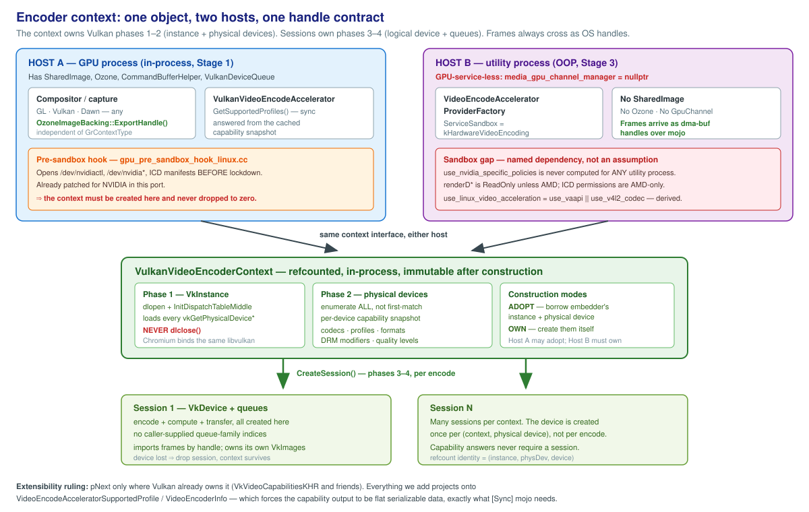

Status: design — implemented by RC-5. The device-model demotion, the adopt-by-context interface, encode-site input adaptation and the glslang-enabled compute filter all landed; see VULKAN_VIDEO_ENCODER_RC5_REVIEW.md for the conformance table and the four open findings. Verified against: upstream Chromium main, fork visgarg/src RC-2, vk_video_samples RC-2, and ThreadedRenderingVk_Standalone (TRV) as the renderer-agnostic reference client.

1. Requirements and settled decisions
R1 — Encoder context. A refcounted object, creatable in the same or a different process, holding a live Vulkan context so capabilities — supported codecs, profiles, formats, DRM modifiers, quality and rate-control modes — can be queried without repeatedly creating and destroying devices. It enumerates devices and is later used to create per-session device and queue contexts. It lives in the NVPRO library.
R2 — Renderer-agnostic. No assumption that the renderer is GL, D3D, Metal or Vulkan. Everything crosses as OS handles and/or IPC, as TRV already does.
Decisions taken before this design and not re-opened here:
| Decision | Consequence |
|---|---|
Reuse Chromium's out-of-process VideoEncodeAcceleratorProvider |
No new process model is invented |
| IPC/mojo marshalling stays in the browser | The library exports plain versioned data, never a transport |
| Capability queries stay cheap and synchronous | GetVideoEncodeAcceleratorSupportedProfiles() is [Sync] on the wire — a requirement, not a preference |
| Refcounting is in-process only | Cross-process lifetime belongs to the mojo connection |
No new pNext extension mechanism |
pNext only where Vulkan already owns it; everything we add projects onto VideoEncodeAcceleratorSupportedProfile / VideoEncoderInfo |
| In-process first; cross-process is a later, separable stage | Stage 1–2 deliver value with no Chromium core change |
The extensibility ruling has a useful side effect: it forces the library's capability output to be flat, serializable, versioned data rather than a live object graph — which is exactly what a [Sync] mojo call requires. The constraint and the transport agree, so it costs nothing.
2. Ground truth
2.1 The OOP encode mechanism already exists
Three mojo interfaces, one per hop: VideoEncodeAcceleratorProviderFactory → VideoEncodeAcceleratorProvider → VideoEncodeAccelerator, all in media/mojo/mojom/video_encode_accelerator.mojom. The factory carries [EnableIf=allow_linux_video_acceleration, ServiceSandbox=sandbox.mojom.Sandbox.kHardwareVideoEncoding] at :102-104. Capability query is [Sync] GetVideoEncodeAcceleratorSupportedProfiles() at :81.
The browser-side launcher is seven lines — content/browser/media/video_encode_accelerator_provider_launcher.cc:13-15, ServiceProcessHost::Launch(...).WithDisplayName("Video Encoder") — driven lazily from the renderer binder at render_process_host_impl_receiver_bindings.cc:361-368 with reset_on_disconnect(), so a crash respawns on next bind.
Two gating facts that matter more than the interfaces:
use_linux_video_acceleration = use_vaapi || use_v4l2_codec(media/gpu/args.gni:58) is a
derived global, not a declare_args knob. A Vulkan-only build has no OOP encode sandbox type and no mojom interface at all. Making OOP work for Vulkan requires changing that expression — a named upstream dependency.
kUseOutOfProcessVideoEncodingisFEATURE_DISABLED_BY_DEFAULT
(media/base/media_switches.cc:1248). The OOP path has effectively no field coverage on Linux. It is a foundation to build on, not a tested baseline.
2.2 The utility process is GPU-service-less, and that is good news
mojo_video_encode_accelerator_provider_factory.cc:40-45 constructs the provider with default gpu::GpuPreferences(), gpu::GpuDriverBugWorkarounds(), gpu::GPUInfo::GPUDevice() and /*media_gpu_channel_manager=*/nullptr. That null short-circuits GetCommandBufferHelper() at mojo_video_encode_accelerator_provider.cc:47-49. Consequence: no GpuChannel, no CommandBufferStub, no SharedImageManager, no SharedContextState, no gpu::VulkanDeviceQueue, and no Ozone.
It is not, however, GPU-less: content/utility/utility_main.cc:151-165 runs gpu::CollectBasicGraphicsInfo, and the pre-sandbox hook opens the DRM render node (media/gpu/sandbox/hardware_video_encoding_sandbox_hook_linux.cc:115).
This is the strongest architectural argument in the whole design. In that host there is no SharedImage to borrow a VkImage from, so input must arrive as dma-buf handles over mojo — which is the renderer-agnostic model, arriving for free. The two hosts differ in how a frame is obtained, not in what the library is handed. Design the handle contract first and treat in-process as the special case where the handle happens to come from a SharedImage.
2.3 Sandbox: the syscall layer is fine, the file broker is the blocker
kHardwareVideoEncoding reuses the GPU policy outright — sandbox/policy/linux/sandbox_seccomp_bpf_linux.cc:223-227 calls GetGpuProcessSandbox(options, MremapPolicy::kBlock), and bpf_gpu_policy_linux.cc:46-48,81-82 allow IsDlopen(sysno) and unrestricted ioctl. So loading an ICD and talking to a driver is permitted at the syscall level.
What the hook permits today (hardware_video_encoding_sandbox_hook_linux.cc): V4L2 encoder nodes; /dev/dri/renderD128..137 ReadOnly unless AMD (:86-88); AMD-only COMMAND_READLINK, /sys access, /usr/share/vulkan/icd.d with a hardcoded radeon_icd.x86_64.json (:72-75), and AMD-only dlopen("libvulkan.so.1") (:131-132). Zero occurrences of nvidia in the file.
And a dead flag underneath it all: content/utility/utility_main.cc:376 sets only sandbox_options.use_amd_specific_policies. use_nvidia_specific_policies is never computed for any utility process, unlike content/gpu/gpu_main.cc:520. So no NVIDIA branch is reachable there today, in either the hook or the BPF variant selection.
The working port sidesteps all of this by staying in the GPU process and patching only content/common/gpu_pre_sandbox_hook_linux.cc — /dev/nvidiactl RW at :525/:541, nvidia_icd.json at :511, wired at :782-783. hardware_video_encoding_sandbox_hook_linux.cc is byte-identical to upstream across the whole branch.
Exact additive delta to host a Vulkan device in kHardwareVideoEncoding:
- Compute
use_nvidia_specific_policiesinutility_main.cc— prerequisite for everything else. COMMAND_READLINKfor non-AMD (sysfs symlinks)./dev/nvidiactl,/dev/nvidia0..9,/dev/nvidia-modesetRW;/proc/driver/nvidia/paramsRO;
upgrade /dev/dri/renderD* to ReadWrite for NVIDIA; /dev/dri directory RO.
- ICD and layer manifests —
AddVulkanICDPermissionscurrently lives only incontent/common
and is not linked from media/gpu/sandbox; move it to a shared target or duplicate it.
- Validate
MremapPolicy::kBlockagainst the NVIDIA driver's unified-memory paths.
/dev/nvidia-uvm is not required — it appears nowhere in content/, sandbox/ or media/ in either tree, and the Vulkan path does not use it.
2.4 The library already has the phase split R1 needs
common/libs/VkCodecUtils/VulkanDeviceContext.cpp:
| Phase | Function | What it establishes |
|---|---|---|
| 1 | InitVulkanDevice / InitVkInstance |
dlopen (:75), InitDispatchTableTop, vkCreateInstance, InitDispatchTableMiddle (:988-996) |
| 2 | InitPhysicalDevice |
enumerate + filter by deviceID/UUID (:661-679), queue-family probe, PopulateDeviceExtensions() (:849), m_physDevice (:832) |
| 3–4 | CreateVulkanDevice |
InitDispatchTableBottom (:1190), GetDeviceQueue (:1210-1220) |
Context = phases 1+2. Session = phases 3+4. No state needs re-partitioning, only relocating.
Decisively: every vkGetPhysicalDevice* entry point the capability path needs is loaded at instance level in InitDispatchTableMiddle — HelpersDispatchTable.cpp:96,99,102 for VideoFormatPropertiesKHR, VideoCapabilitiesKHR, VideoEncodeQualityLevelPropertiesKHR, and :33-34 for FormatProperties2/ImageFormatProperties2. Capabilities need no VkDevice, which is exactly what R1 asserts.
The refcount idiom already exists — VkVideoRefCountBase.h:22-28, with template<class T> using VkSharedBaseObj = std::shared_ptr<T>; and the factory shape VkResult Create…(…, VkSharedBaseObj<T>& out). R1 gets thread-safe refcounting for free; do not invent one.
What must break: VulkanVideoEncoderExtImpl holds VulkanDeviceContext m_vkDevCtx; by value (vulkan_video_encoder_ext.cpp:233). That becomes a VkSharedBaseObj<VulkanVideoEncoderContext>.
What must not happen: do not make VulkanDeviceContext itself refcounted. Its destructor unconditionally dlclose()s (:1319) and destroys non-imported instances (:1271-1301). Wrap that ownership once, inside the context, and never let it run in a Chromium process — Chromium's gpu::VulkanFunctionPointers are bound to the same library.
Device enumeration does not exist. InitPhysicalDevice is a first-match selector with deviceId/UUID filters; nothing returns a device list or a per-device capability array. R1's enumeration requirement is net-new API. Note deviceId matches VkPhysicalDeviceProperties::deviceID, not an ordinal — it cannot disambiguate two identical GPUs, so gpuUUID is the real selector.
2.5 What the capability path does today, and what a context fixes
media/gpu/vulkan/vulkan_video_encode_capability_enumerator.cc loops a five-entry candidate table (:82-98 — H.264 Baseline/Main/High, HEVC Main, AV1 Main) calling …ProfileCapabilitiesEphemeral(/*deviceId=*/-1, …) at :220-221. Each call builds a fresh VulkanDeviceContext: dlopen + layer/extension enumeration + vkCreateInstance + vkEnumeratePhysicalDevices + per-device extension enumeration + the capability query, then vkDestroyInstance + dlclose. Five full loader and instance bring-ups per cache computation. No VkDevice is ever created.
| # | Defect | Fixed by a persistent context? |
|---|---|---|
| D1 | Five loader/instance bring-ups per computation | Yes — becomes five vkGetPhysicalDeviceVideoCapabilitiesKHR calls |
| D2 | The cost is asserted, never measured — no TRACE_EVENT, timer or UMA on the path |
No. Instrument before claiming the win |
| D3 | Unsynchronised lazy cache fill; the comment claims GPU-main-thread callers (:336-338) but production callers are per-provider ThreadPool sequences (gpu_service_impl.cc:654) |
No — refcounting does not serialise. Publish an immutable snapshot built in the constructor |
| D4 | Hand-rolled cache invalidation via IsProbeInfraFailure() (:150-167) |
Yes, structurally — cache lifetime becomes context generation |
| D5 | The probe uses "first capable device"; the encode uses Chromium's BYO device | Yes — same VkPhysicalDevice probed and used |
| D6 | Initialize() returns kOk with initialized_=true before it knows it has a device, so the factory selects Vulkan ahead of VA-API (gpu_video_encode_accelerator_factory.cc:186 vs :189) and the refusal arrives later via NotifyTerminalError, bypassing fallback |
Yes, if the accessor is synchronous — deletes helper_fetch_pending_ / async_init_pending_ / pending_init_config_ |
| D7 | Field fidelity: only min/max resolution and rate_control_modes are probe data. max_framerate is hardcoded 60/1 (:49,:184-185), scalability_modes hardcoded {kL1T1} (:267) |
No — policy work, see §3.3 |
| D8 | The BYO capability entry point is broken. It passes requestQueueTypes = 0 (vulkan_video_encoder_ext.cpp:4968-4972), and InitPhysicalDevice continues when (queueFamilyFlags & requestQueueTypes) == 0 (VulkanDeviceContext.cpp:726-728), so m_physDevice stays null and it returns VK_ERROR_FEATURE_NOT_PRESENT |
Prerequisite, not a fix — must be repaired first |
D8 is worth dwelling on: the entry point this design most wants to build on has never worked. The only test (vulkan_video_encode_accelerator_unittest.cc:4244-4267) exercises the sType/pNext gate and returns before any Vulkan work, and the samples repo has no caller at all. The honest repair is an adopt entry point that skips queue selection entirely — when the caller supplies the physical device there is nothing to select.
2.6 The handle vocabulary, and where it constrains R2
vulkan_video_encoder_ext.h:261-272 defines NONE, OPAQUE_FD, DMA_BUF, OPAQUE_WIN32, D3D11_TEXTURE, VK_IMAGE, with TRANSFER/BORROW ownership at :258-259.
Scoping is enforced at vulkan_video_encoder_ext.cpp:3802-3841: DMA_BUF is the only cross-driver-legal type; the opaque types fail DEVICE_MISMATCH on driverUUID/deviceLUID mismatch; VK_IMAGE is same-VkDevice-only.
The decisive asymmetry for R2 is memory-type derivation. memoryTypeIndex == UINT32_MAX (exporter's Vulkan parameters unknown — which is always true for a GL or D3D exporter) is legal for DMA_BUF via vkGetMemoryFdPropertiesKHR (:3057-3069) and for D3D11_TEXTURE via vkGetMemoryWin32HandlePropertiesKHR (:3105-3121), but is a hard MEMORY_TYPE_UNSUPPORTED for OPAQUE_WIN32 (:3091-3097) and unusable for OPAQUE_FD (:3081).
Therefore R2 has exactly two renderer-agnostic transports: dma-buf on Linux and D3D11 shared NT handles on Windows. The opaque types require a Vulkan exporter that ships its own
memoryTypeIndex, and are therefore Vulkan-to-Vulkan optimisations, not general transports.
A second constraint: imageUsage == 0 is rejected as USAGE_INSUFFICIENT (:3632-3636) for every non-VK_IMAGE type, and the descriptor is documented as carrying "the exporter's ACTUAL VkImageCreateInfo. Never guessed" (vulkan_video_encoder_ext.h:327) — which a GL or D3D exporter cannot honour. §3.4 resolves this.
On the Chromium side, dma-buf export is genuinely orthogonal to the compositor API: OzoneImageBacking::GetGpuMemoryBufferHandle() returns pixmap_->ExportHandle() (ozone_image_backing.cc:129-131) regardless of GrContextType. Only NativePixmap-backed SharedImages export — the base SharedImageBacking::GetGpuMemoryBufferHandle is NOTREACHED().
3. Design
3.1 The context object
```c // Opaque, refcounted, immutable after construction. typedef struct VulkanVideoEncoderContext VulkanVideoEncoderContext;
typedef enum VkVideoEncoderContextMode { // Create and own VkInstance + enumerate physical devices. VK_VIDEO_ENCODER_CONTEXT_MODE_OWN = 0, // Borrow an instance and physical device the embedder already has. // Nothing is created and nothing is destroyed on release. VK_VIDEO_ENCODER_CONTEXT_MODE_ADOPT = 1, } VkVideoEncoderContextMode;
typedef struct VkVideoEncoderContextCreateInfo { VkStructureType sType; const void* pNext; VkVideoEncoderContextMode mode; // ADOPT only. Both required together; either alone is an error. VkInstance adoptInstance; VkPhysicalDevice adoptPhysicalDevice; // OWN only. All-zero UUID means "enumerate everything". uint8_t gpuUUID[VK_UUID_SIZE]; VkBool32 silenceStdio; } VkVideoEncoderContextCreateInfo;
VkResult CreateVulkanVideoEncoderContext( const VkVideoEncoderContextCreateInfo* pCreateInfo, VkSharedBaseObj<VulkanVideoEncoderContext>& outContext); ```
Lifetime rules, each derived from a specific hazard:
- Never
dlclose. Chromium'sgpu::VulkanFunctionPointersbind the samelibvulkan.so.1.
The context owns the handle for the process lifetime.
- The refcount must not reach zero and re-create. Dropping to zero and re-creating re-issues
vkCreateInstance after sandbox lockdown — ICD manifest re-reads, /dev/nvidiactl re-open, /sys PCI reads — and any one broker denial is a device loss. Hold a leaky floor reference (base::NoDestructor on the browser side) with per-encoder references layered on top. Teardown releases sessions and images, never the instance.
- Immutable after construction. The capability snapshot is built inside the constructor
under the construction lock and is thereafter read-only, so several sequences can share it without synchronisation. This is what fixes D3; refcounting alone would not.
- ADOPT never destroys. In ADOPT mode release is a no-op on the Vulkan objects.
- Refcount identity is the
(VkInstance, VkPhysicalDevice, VkDevice)triple. Stamp a context
epoch into the high bits of the generation-counted VkVideoEncoderResource id, so a resource minted on context A is rejected on context B rather than silently matching a recycled slot.
- The VEA currently caches
gpu::VulkanDeviceQueue*as a raw pointer because the GPU-process
root outlives it. Once ownership moves to the context, the context must be provably longer-lived than every VEA or that pointer becomes a use-after-free.
Host A may use either mode; Host B must use OWN.
3.2 Capability query and device enumeration
```c uint32_t VkEncGetPhysicalDeviceCount(VulkanVideoEncoderContext* ctx);
// Stable identity across processes and runs. deviceID alone cannot // disambiguate two identical GPUs; the UUID can. VkResult VkEncGetPhysicalDeviceIdentity( VulkanVideoEncoderContext* ctx, uint32_t deviceIndex, VkVideoEncoderDeviceIdentity* pOut); // deviceUUID, driverUUID, name, vendorID
VkResult VkEncGetEncodeCapabilities( VulkanVideoEncoderContext* ctx, uint32_t deviceIndex, VkVideoCodecOperationFlagBitsKHR codec, StdVideoProfile profile, VkVideoEncoderEncodeCapabilities* pOut);
// Answerable WITHOUT a session -- required, because the producer picks a // modifier at allocation time, long before any encoder exists. VkResult VkEncEnumerateDrmModifiers( VulkanVideoEncoderContext* ctx, uint32_t deviceIndex, VkFormat format, VkImageUsageFlags usage, uint32_t* pCount, uint64_t* pModifiers); ```
Two existing queries are gated on m_initialized today and must move onto the context, because both need only a physical device: EnumerateDrmModifiers (vulkan_video_encoder_ext.cpp:3415-3439) and the filterCapable half of FillImageSupportDetails (:3525-3568). ModifierWouldRegister (:3441) is already device-independent.
Compatibility: the four existing Enumerate* functions are extern "C" exports under VK_VIDEO_ENCODER_EXT_API_VERSION 5 (vulkan_video_encoder_ext.h:64), whose own rule at :26 says a compatibility break bumps the version. Keep them as thin wrappers that build a throwaway context, so the vendored copy migrates without a flag day.
3.3 The capability projection — and the ruling the extensibility decision forces
The library queries the full Vulkan capability chain, then projects it down to the flat properties Chromium understands. That projection is where honesty problems live: today some SupportedProfile fields are real probe data and others are constants, with nothing marking which is which.
VideoEncodeAccelerator::SupportedProfile has ten fields (media/video/video_encode_accelerator.h:218-226), mirrored 1:1 in video_encode_accelerator.mojom:47-58 with traits at video_encode_accelerator_mojom_traits.h:33,101 and a typemap at media/mojo/mojom/BUILD.gn:967. VideoEncoderInfo carries the post-init half.
Neither surface can express a DRM-modifier list, per-physical-device identity, maxQualityLevels or maxBitrate. The port currently keeps the last two in private side-maps inside the enumerator cache. Since we ruled out inventing a parallel extension mechanism, every such property needs an explicit per-property ruling:
| Property | Ruling |
|---|---|
maxQualityLevels, maxBitrate |
In-process only. Negotiated in-band at Initialize(); never crosses the capability wire |
Per-device identity (deviceUUID) |
In-process only for now. If OOP needs device selection, it becomes an argument to the provider, not a property |
| DRM modifier list | Does not cross the capability wire at all. Resolved at the allocation site instead — see §3.3.1 |
max_framerate, scalability_modes |
Populate from real probes rather than the current constants (D7). No new surface needed — the fields already exist |
Note the adapter corrects supports_gpu_shared_images after the fact via NotifyEncoderInfoChange (video_encode_accelerator_adapter.cc:1043-1044), so a wrong initial value costs extra copies on early frames rather than being permanent — which sets the precedent that initially-conservative, corrected-later is acceptable for this class of property.
3.3.1 What negotiation is for — and what it is not
This interface does not expose a Vulkan device. It exchanges frames and formats. Nothing in it hands a VkDevice, VkImage or queue to the embedder, and nothing requires the embedder to own one.
Negotiation exists for exactly one purpose: to find out whether a zero-copy path between the producer and the encoder is possible, and if so which format and modifier achieve it. It is an optimisation search, not a compatibility gate. When it fails, nothing breaks — the library adapts (§3.4.1).
Measured on an RTX 5080, driver 620.05, via vkGetPhysicalDeviceVideoFormatPropertiesKHR with VIDEO_ENCODE_SRC usage:
| Codec | Accepted encode-source formats |
|---|---|
| H.264 | NV12 OPTIMAL — and nothing else |
| H.265 | NV12 OPTIMAL — and nothing else |
| AV1 | NV12 OPTIMAL — and nothing else |
So on contemporary hardware an RGB producer can never achieve zero-copy. Not "usually not" — there is no accepted RGB encode-source format at all, for any of the three codecs. Combined with the modifier data below (LINEAR NV12 does not advertise VIDEO_ENCODE_INPUT; five block-linear modifiers do), the zero-copy set on this device is exactly: NV12, block-linear modifier, VIDEO_ENCODE_SRC usage. Everything else is adaptation.
That yields the negotiation outcome hierarchy, in order of preference:
- The producer's native format and modifier are already encodable → true zero-copy. Reachable
only when the producer is producing NV12 on a block-linear modifier.
- No zero-copy format exists → choose a direct render format: the format the producer can
render into natively, with no producer-side conversion, and let the library perform the single adaptation at the encode site. The goal here is to avoid a copy on both sides, not to force the producer toward the encoder's format.
- Only if the producer cannot render the chosen format natively does a producer-side conversion
become justified — and that should be treated as a negotiation failure worth logging.
Why outcome 2 matters concretely in Chromium. Today the RGBA path runs WebGraphicsContext3DVideoFramePool::CopyRGBATextureToVideoFrame — a producer-side GPU blit into a pooled NV12 shared image — and the encoder may then stage that image again. That is the copy-on-both-sides case. The correct resolution under this design is the opposite: let the producer keep RGBA, which is its native render target and therefore free, and let the library do the one RGBA → NV12 conversion on the encode side. One pass instead of two, and one fewer pooled allocation.
If a future device does accept RGB encode input, the library uses it and the negotiation simply succeeds at outcome 1. Nothing in the design has to change — that is the point of making negotiation a search over what the real device reports rather than a hardcoded format list.
3.3.2 DRM modifiers: do not negotiate them separately, filter at allocation
Having established what negotiation is for, the modifier half of it turns out to need no new protocol at all. This looked like the forcing case for a new capability field. It is not, and the reason is worth recording because two plausible designs are both wrong.
What TRV does: it removes the negotiation rather than solving it. Three decisions, none involving the encoder. The consumer's requirement is declared out-of-band before allocation (a CLI spec setting encoderTarget, ThreadedRenderingVk.cpp:2076). The producer then resolves the modifier against the driver on its own physical device — selectBestDrmModifier() (ExternalMemory.h:398) → queryDrmModifiers() (:338) → vkGetPhysicalDeviceFormatProperties2 with VkDrmFormatModifierPropertiesListEXT (:352), called from createOutputPool() (PostProcessFilter.cpp:467). And the ordering makes the question unaskable anyway: initPostProcessFilter() runs at ThreadedRenderingVk.cpp:1644-1646, while initMultiWindow() — which forks the encoder process — runs at :1706. Allocation and export are complete before the consumer exists. The modifier then rides the IPC FrameData (PresenterInstance.h:107-114). On mismatch there is no renegotiation: vkCreateImage fails (EncoderInstance.cpp:2232) and the frame is dropped (:2422-2430).
Why "ask the encoder instead of advertising" does not work. The library ships a renegotiation surface — MODIFIER_UNSUPPORTED (vulkan_video_encoder_ext.cpp:3853) and a directModifiers "modifiers that would work" list (:3581) — but QueryImageSupport, RegisterImageResource and SubmitRegisteredFrame have zero callers repo-wide, and the physical-device half of ValidateImageDescriptor is gated on m_initialized (:3685), which is set only after CreateVideoEncoder (:1461). The library cannot answer a modifier question before a session exists. So the predicate-shaped API that would have made this a mojo method rather than a struct field is not usable today.
The ruling — neither of those. Chromium already has the mechanism, in the right process, at the right call site, with zero wire cost:
ui::DrmModifiersFilter(ui/ozone/public/drm_modifiers_filter.h:30-37) — the abstraction,
whose header comment describes exactly this problem for a Vulkan consumer.
DrmModifiersFilterVulkan::Filter()
(gpu/command_buffer/service/drm_modifiers_filter_vulkan.cc:74-96) — queries VkDrmFormatModifierPropertiesEXT on the physical device and intersects. This is selectBestDrmModifier under a different name.
- Installed at
gpu/ipc/service/gpu_init.cc:940-953, holding the sameVulkanImplementationthe
encoder will use.
- Consumed at allocation:
ui/ozone/platform/wayland/gpu/gbm_pixmap_wayland.cc:60→
CreateBufferWithModifiers at :77-78.
The out-of-band consumer declaration TRV hand-rolled in argv also already exists end to end: NativePixmapUsage::kHWVideoEncoder — "Buffer will be read by a video encode accelerator" (ui/ozone/public/native_pixmap_usage.h:31-32) — reached from gfx::BufferUsage::VEA_READ_CAMERA_AND_CPU_READ_WRITE, which WebRTC already passes (rtc_video_encoder.cc:677), arriving at the allocation site as NativePixmapUsageSet usage (gbm_pixmap_wayland.cc:44).
So the gap is one plumbing edit, not a negotiation protocol. Nothing crosses mojo, nothing is added to SupportedProfile, and it works identically whether the encoder is in-process or out — because the filtering happens in the GPU process where the allocator lives, in both cases.
Availability caveat, added after RC-5. The mechanism exists but is not unconditionally available.
DrmModifiersFilterVulkanis installed only whengpu_feature_info_.status_values[GPU_FEATURE_TYPE_VULKAN] == kGpuFeatureStatusEnabled(gpu/ipc/service/gpu_init.cc:978-990) — that is, only when the compositor is Vulkan. Under the default GL compositor, which is the configuration this whole design exists to serve, no filter is installed and nothing constrains the modifiers the producer allocates with. An earlier revision of this section said "one plumbing edit"; the edit is real but it has to make the constraint available on a non-Vulkan compositor, which is more than rewiring an existing call. SeeVULKAN_VIDEO_ENCODER_RC5_REVIEW.md§2 F2.
Why a field on SupportedProfile is an adjunct at best. It is cheaper than it sounds — gpu_supported_pixel_formats and supports_gpu_shared_images are precisely this shape and were added precisely this way, and gpu::VideoEncodeAcceleratorSupportedProfile (gpu/config/gpu_info.h:184-191) is already a lossy subset that drops such fields silently, so it does not metastasise into about:gpu. But SupportedProfile travels renderer → GPU, so it reaches the allocator only where the renderer allocates. WebRTC does; the compositor, capture and tab-share producers live in viz and never see one. It covers the case the question was not about.
Why a negotiation call on the provider is wrong outright. It answers on the wrong side of the process boundary — the entity that must consume a modifier list is the GBM/Ozone allocator in the GPU process, and that interface's client is the renderer, so the answer ships away from the consumer and must be shipped back. It also duplicates GetVideoEncodeAcceleratorSupportedProfiles(), giving one question two sources of truth with different cache lifetimes.
ModifierWouldRegister omits VkVideoProfileListInfoKHR from its vkGetPhysicalDeviceImageFormatProperties2 query, and that is fine. It reads like a violation of VUID-VkPhysicalDeviceImageFormatInfo2-pNext-06813, so it was tested rather than assumed — probed on an RTX 5080 (driver 620.05) under validation layer 1.4.313, with a usage = 0 control proving the harness does catch VUIDs:
| Query form | Result | Validation |
|---|---|---|
No profile list, no VIDEO_PROFILE_INDEPENDENT — what the library does |
VK_SUCCESS, importable |
clean |
No profile list, with VIDEO_PROFILE_INDEPENDENT |
VK_SUCCESS, importable |
clean |
| With profile list — by the book | VK_SUCCESS, importable |
clean |
Control: usage = 0 |
— | VUID-…-usage-requiredbitmask fires |
Validation does not flag the omission and the driver returns an identical verdict either way. VK_IMAGE_CREATE_VIDEO_PROFILE_INDEPENDENT_BIT_KHR (from VK_KHR_video_maintenance1, which the library already uses at VulkanVideoImagePool.cpp:376) exists precisely to lift that requirement. The query shape is sound as written.
What the probe did establish — measured NV12 modifier support on RTX 5080:
`` 0x0300000000606011 .. 0x0300000000606015 planes=2 VIDEO_ENCODE_INPUT: YES (block-linear) 0x0000000000000000 (LINEAR) planes=2 VIDEO_ENCODE_INPUT: no ``
LINEAR is not an encode source on this driver. A linear image can never be encoded directly, whatever device it lives on. That is not a limitation of the separate-device design — it is the normal case, and it is what §3.4.1 exists to handle.
3.4 The handle-exchange contract (R2)
Transports. dma-buf on Linux and D3D11 shared NT handles on Windows are the renderer-agnostic pair (§2.6). OPAQUE_FD/OPAQUE_WIN32 remain available as Vulkan-to-Vulkan optimisations and must be documented as such rather than as general transports.
The abstraction is not a common field set — it is a set of per-handle-type rules over one field set. That framing resolves both things a non-Vulkan producer supposedly cannot supply, and it means no "derive mode" or other new descriptor surface is needed for them.
memoryTypeIndex: a non-Vulkan producer satisfies it by not supplying it. The rule is per-arm (vulkan_video_encoder_ext.cpp:3032-3128):
| Arm | Authoritative source | Producer's memoryTypeIndex |
|---|---|---|
DMA_BUF |
vkGetMemoryFdPropertiesKHR (:3064-3070), intersected with memReqs.memoryTypeBits |
Preference only. UINT32_MAX legal; the heuristic fallback is logged, never silent (:3072-3077) |
D3D11_TEXTURE |
vkGetMemoryWin32HandlePropertiesKHR (:3106-3110) |
Not needed; if the query fails the library refuses to guess on WDDM (:3111-3120) |
OPAQUE_FD |
forbidden to query by spec | exporterIndexExact = TRUE (:3081) |
OPAQUE_WIN32 |
forbidden to query by spec | Required; UINT32_MAX → MEMORY_TYPE_UNSUPPORTED (:3090-3098) |
So the contract is "a non-Vulkan producer may use only DMA_BUF or D3D11_TEXTURE; the opaque arms are Vulkan-exporter-only." The opaque arms exist precisely because there the exporter's allocation parameters are the only legal ones — a statement only a Vulkan exporter can make.
Note TRV is the counterexample here, not the model: EncoderInstance.cpp:1981 assigns allocInfo.memoryTypeIndex = frame.memoryTypeIndex unconditionally, and ExternalMemory.h:526-544 picks the first DEVICE_LOCAL type without calling vkGetMemoryFdPropertiesKHR at all. TRV's own audit flags this (docs/proj-status/RELEASE_AUDIT_2026-07-23.md:227); it survives only because both TRV processes sit on one physical GPU.
imageUsage: it is the importer's declared minimal intent, not the exporter's usage. For a GBM/Ozone producer there is no VkImageCreateInfo to transport. The descriptor splits into a transported half and a derived half:
- Transported, API-neutral, and already exactly Chromium's wire:
format, extent,
tiling = DRM_FORMAT_MODIFIER, hasDrmFormatModifier + drmFormatModifier (vulkan_video_encoder_ext.h:347-348), and explicit planeLayouts[] (:357). Every one is carried by gfx::NativePixmapHandle already (ui/gfx/mojom/native_handle_types.mojom:12,23-27). Field copy in both directions.
- Not transportable:
imageUsageandimageFlags.
The header's "the exporter's ACTUAL VkImageCreateInfo. Never guessed" is written for a Vulkan exporter. For a dma-buf import the correct rule is: VulkanVideoEncodeAccelerator fills imageUsage itself from a fixed minimal set — VIDEO_ENCODE_SRC_KHR, plus TRANSFER_SRC only where a copy path is enabled — validated against the modifier via vkGetPhysicalDeviceImageFormatProperties2 with VkVideoProfileListInfoKHR chained (§3.3.1), and never accepts a caller-supplied value, because a caller-supplied one is by construction a guess. This is the one place the library's rule cannot be applied verbatim to Chromium, and it belongs as a comment in the vendored carried patch.
For contrast, TRV's non-Vulkan answer is empirical verification, not contract: the D3D probes fabricate a create-info from a canonical recipe and byte-compare both directions (d3d11_vk_import_probe.cpp:293-296,330-335,480). Chromium cannot run an NV12 round-trip probe per format per driver at GPU-process startup, which is exactly why the validated-usage rule above is not optional.
Four further rules, each from a specific hazard:
- Arm discipline as an invariant. Ozone-sourced pixmaps ⇒
DMA_BUFonly; make the opaque
arms unreachable from VulkanVideoEncodeAccelerator by construction. The OOP path enforces this for free — gfx::NativePixmapHandle cannot express opaque-FD, having no allocationSize or memoryTypeIndex.
- Keep
hasDrmFormatModifierexplicit. TRV infers the DRM path fromtiling == 2and so
cannot distinguish "no modifier" from DRM_FORMAT_MOD_LINEAR (0). Worse, PresenterInstance.cpp:1550 remaps handleType == 0 to DMA_BUF as a legacy default while EncoderInstance.cpp:1804-1805 casts it raw — two consumers, two behaviours, from one zero-initialised field. _NONE = 0 is the correct choice.
- Honour
residencyon theVK_IMAGEarm. The in-process BYO path is
handleType = VK_IMAGE + existingImage, the one arm where the library cannot derive residency and honours the caller (vulkan_video_encoder_ext.cpp:3737-3747). Declaring FOREIGN for a locally-created image is a queue-family acquire with no matching release — a wedged queue, not a slowdown. TRV has no VK_IMAGE arm and no residency concept, so there is no prior art; this is the highest-risk field in the descriptor.
- Replace the disjoint-plane heuristic with the real test. The library infers disjointness
from planeLayouts[i].offset == 0 for i > 0 (:3660-3668) because it receives one fd. gfx::NativePixmapHandle carries one fd per plane, so Chromium can compare fd identity directly. GBM does produce disjoint NV12 on some drivers; do not inherit the proxy.
3.4.1 The library owns adaptation — this is the core contract
This is the load-bearing idea behind R2 and it must be unambiguous: the NVPRO library handles every detail of adapting a frame when zero-copy is impossible. The embedder is never asked to convert, re-tile, or re-allocate to suit the encoder. It hands over what it has, and the library makes it encodable.
The producer does not adapt to the encoder. The encoder adapts to whatever arrives. A frame may arrive with the wrong tiling (linear, when only block-linear modifiers are encodable), the wrong format (RGBA, when NV12 is the only accepted encode source — §3.3.1 measures both), or both.
And the library must adapt in the most efficient way the real device allows, in this order:
| Mechanism | When | Cost |
|---|---|---|
| Hardware conversion in the encoder — device accepts the producer's format as encode input directly | whenever vkGetPhysicalDeviceVideoFormatPropertiesKHR reports it. Not available on RTX 5080 / 620.05: NV12 only |
free |
Compute shader — VulkanFilterYuvCompute, e.g. RGBA2YCBCR |
format conversion, subsampling, bit-depth | one compute pass on the encoder's compute queue |
Transfer copy — vkCmdCopyImage |
tiling-only mismatch; linear → block-linear | one blit on the transfer or encode queue |
The ordering is the design rule: query the device first, use hardware if it exists, compute if it does not, transfer only for pure tiling mismatches. Falling straight to a copy when the device could have converted, or to compute when the device could have taken the format directly, is a defect — which is why the mechanism choice belongs inside the library, where the device capabilities are known, rather than in the embedder.
Three consequences follow, and they tie the open threads in this project together:
- This is why the encoder must own its queues. Preprocessing needs a transfer queue for the
staging copy and a compute queue for the filter. Under the borrowed-device model those are queues the embedder had to create on the encoder's behalf — the coupling the device-independence plan removes. Self-sufficiency in queues is not tidiness; it is what makes the adaptation layer possible at all.
- This is why the compute filter is on the critical path, not a nice-to-have. With it
compiled out, the only adaptation available is a tiling copy — so RGBA input has no path through the encoder and must be converted upstream, on the CPU via libyuv::ARGBToNV12 or with an extra GPU pass plus a pooled NV12 allocation. Enabling it is what lets the encoder accept what renderers actually produce. See VULKAN_VIDEO_GLSLANG_SHADER_COMPILER.md.
- This is why zero-copy can be an optimisation rather than a requirement. If adaptation
always works, a wrong-tiling or wrong-format frame is a performance tier, not a failure. That is what allows §3.3.1 to resolve modifier selection by filtering at allocation (§3.3.2) and not negotiating: a filter miss costs a copy, not a dropped frame.
The one case the adaptation layer cannot rescue is a different physical GPU, where the import itself is refused (DEVICE_MISMATCH) and there is nothing to preprocess. Physical-device pinning via gpuUUID (§3.2) remains required for that reason alone.
Token-keyed registration on Windows. The NT handle is process-local, and Chromium dedupes by gfx::DXGIHandleToken alone (dxgi_shared_handle_manager.h:166-168). Registration must take (opaque token, handle) so a re-registration after an IPC hop maps to the same refcounted import rather than creating a second VkImage over one texture.
Also check deviceUUID/driverUUID at registration (vulkan_video_encoder_ext.h:385). TRV ships FrameData::gpuUUID and never reads it in any consumer. Chromium is genuinely multi-GPU, and DEVICE_MISMATCH before the modifier verdict (:3840) is the right order.
Cache and lifetime rules:
- Key the import cache by
(exporter pool slot, descriptor equality)— never by frame id. TRV
produced duplicate-frame bitstreams from a frame-counter key (EncoderInstance.cpp:1606-1610, :2117-2120). Destroy slots only behind vkDeviceWaitIdle (:1632, :2136).
- Track two independent lifetimes: the OS handle (TRANSFER/BORROW) and the imported
VkImage/VkDeviceMemory (refcounted). Collapsing them double-closes an fd on Linux and leaks NT handles on Windows. Record the handle as consumed the moment vkAllocateMemory succeeds.
- Queue-family ownership transfer is performed by nobody in either codebase today, although
every import uses VK_SHARING_MODE_EXCLUSIVE. That is a latent bug whenever the producer and the encoder sit on different families of one device. The context must either perform the acquire or require the caller to.
Cross-context rebinding: permitted for DMA_BUF only; DEVICE_MISMATCH for the three opaque types; refused for VK_IMAGE.
3.5 Synchronisation — the one genuine API gap
Chromium's cross-API sync currency is gfx::GpuFenceHandle, a binary sync_fd on Linux, converted per device at gpu/vulkan/semaphore_handle.cc:42-44 and imported at vulkan_ozone_image_representation.cc:49-53. The foreign seam is BeginReadAccess/EndReadAccess(gfx::GpuFenceHandle&) (shared_image_representation.h:1027).
The library's VkVideoEncoderSemaphoreDescriptor is timeline-only (vulkan_video_encoder_ext.h:976-979), and RegisterSemaphoreResource rejects binary semaphores deliberately — a binary semaphore cannot express "wait for frame N" and cannot be registered once and named repeatedly, which is the entire point of registration.
Both positions are correct, and they do not meet. New API is required: a per-frame acquire/release fence entry point performing a VK_SEMAPHORE_IMPORT_TEMPORARY_BIT SYNC_FD import and exporting a release sync_fd — exactly the shape of EncoderInstance.cpp:1302-1304. TRV already demonstrates the three-handle-type, two-transference-semantics model: SYNC_FD is copy-transference, hence TEMPORARY; OPAQUE_FD/OPAQUE_WIN32 are reference-transference and used for permanent cross-device timeline bridges (:2539-2541, :2350).
Without this, a GL or Vulkan Chromium compositor can only be synchronised against the encoder by a CPU wait. This is a real gap, not a wiring detail, and it is on the critical path for zero-copy in either host.
3.6 Where the code lives
| Component | Home | Rationale |
|---|---|---|
| Context object, enumeration, capability structs | NVPRO library | Capability truth belongs with the implementation |
Capability → SupportedProfile projection |
Browser | It is a Chromium type; the library must not depend on media/ |
| Mojo marshalling, process launch | Browser | A transport inside a codec library is wrong for every non-Chromium embedder |
| Handle import/export | NVPRO library | Already there; TRV proves the seam |
TRV is the standing proof that this split works: it does all its own handle plumbing and the library never learns what a renderer is.
One correction about TRV's scope, since it is easy to over-claim. TRV has exactly one producer API: Vulkan — three Vulkan sites fill the frame descriptor (RenderFramePool.h:1575, PostProcessFilter.cpp:898, DecoderFrame.cpp:347). CUDA is a consumer (NvcuvidEncoderInstance.cpp:602 deserialises presenter::FrameData and calls cuImportExternalMemory at :951-958), and the D3D work is four standalone Windows probes plus a design note — RemotePresenterSpec.h:513-514 parses only vulkan and nvcuvid. In d3d11_vk_nvenc_probe.cpp the direction is even reversed, with Vulkan as producer.
So the polymorphism TRV demonstrates is consumer-side, and the renderer-agnostic producer contract lives in the library header rather than in TRV. TRV proves the process split, the handle transport and the separate-device model; it does not prove multi-API production, and this design should not cite it as if it did.
TRV's IPC is likewise not a precedent for capability exchange: there is no capability handshake. READY carries only {hasTimelineSemaphore, reserved} (PresenterInstance.h:70-74), and ENCODER_CONFIG has no sender anywhere in the tree — only handlers. Everything the child needs arrives as argv at fork time. That is a reasonable choice for a sample and an unusable one for a browser, which is another reason capability transport stays on mojo (§1).
4. Prerequisites — defects to fix before building on any of this
- D8 — repair the BYO capability entry point. It cannot work today. The repair is an adopt
path that skips queue selection. Note PopulateDeviceExtensions() is called only inside the unreachable block, and the capability path currently works around that by re-querying (:4716-4736).
m_reqDeviceExtensionsaccumulates duplicates across candidate devices
(VulkanDeviceContext.cpp:310,328 inside HasAllDeviceExtensions), affecting every candidate examined before the selected one. Build the list per candidate and make phase-2 state const-after-construction before sharing the context across sequences.
- Instrument the capability path (D2). No
TRACE_EVENT, timer or UMA exists. The design is
justified by a cost nobody has measured; measure it before the claim ships.
- Fix the fail-open selection (D6) — independently valuable, and the synchronous context
accessor makes it trivial.
- Enable the compute filter — the second half of the adaptation layer (§3.4.1). Without it
the encoder can correct tiling but not format, which leaves RGBA input with no path through the encoder at all. Requires the shaderc → glslang port.
5. Staging
Stage 1 — context in-process, ADOPT mode. Build the context, adopt Chromium's instance and physical device, move the capability cache into it. Fixes D1, D4, D5. No Chromium core change, no sandbox change, no behaviour change visible to the renderer.
Stage 2 — context in OWN mode, in the GPU process. The library creates its own instance, device and every queue it needs. This is the device-independence plan's Stage 4 and this design's R1 converging — they are the same work. Requires §3.5 sync work for zero-copy.
Stage 3 — OOP. Requires, in order: the use_linux_video_acceleration expression changed upstream; use_nvidia_specific_policies plumbed to utility processes; the sandbox hook delta (§2.3); the DRM-modifier ruling (§3.3); and G-NEW-12 dma-buf external input — which is a prerequisite for OOP, not an optimisation, because there is no SharedImage in that host.
Stages 1 and 2 deliver the architecture. Stage 3 buys crash isolation.
6. Risks and unknowns
Verified risks: dlclose of a shared ICD (§3.1); refcount-to-zero re-creating an instance post-sandbox; ABI break on the four extern "C" exports; mutable phase-2 state; the VEA's raw VulkanDeviceQueue*; the binary/timeline semaphore mismatch; missing queue-family ownership transfer; process-local Windows handles; the never-computed NVIDIA vendor flag; MremapPolicy::kBlock unvalidated against the NVIDIA driver; the utility process having no Ozone (the existing sandbox browsertest already skips this sandbox type on Linux for that reason).
Not verified — do not treat as known:
- The cost of
VkDevicecreation with video extensions on this stack. Nothing measures it.
The requirement "we don't want to create and destroy a device" is well-motivated by the five-instance-bring-up capability path (D1, which is verified), but the per-session device cost is an assumption. Measure before it becomes a requirement.
- Whether
kHardwareVideoEncoding's BPF policy actually admits the NVIDIA driver once the
file-broker paths are added. The syscall layer looks permissive, but mremap is blocked and nobody has run it.
- Whether a second
VkDeviceon one physical GPU costs anything material — still unmeasured,
as recorded in the device-independence plan.
7. References
— why the encoder should own its device; §8.1 the hardware verification
filter dependency that unblocks RGBA input
exchange; "No same-device carve-out"
VULKAN_VIDEO_ENCODER_ARCH_REVIEW.md— findings A0–A14- TRV:
ThreadedRenderingVk_Standalone/src/encoder/EncoderInstance.cpp— the reference client